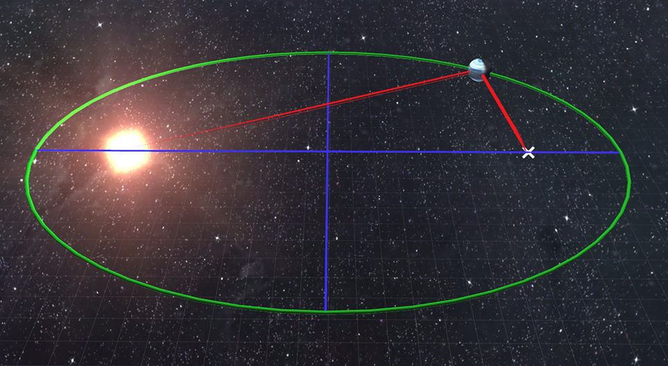

Leyes de Kepler - Johannes Kepler
 Empezamos con uno de los padres de la Astronomia, Kepler, el cuál estableció una serie de leyes las cuales resultaron fundamentales para el entendimiento del espacio y el comportamiento de los planetas,
como los de nuestro sistema solar.
1.- Ley de las órbitas
La orbita de los planetas no es circular, es en forma de elipse, ubicando al Sol como uno de los focos de la elipse
2.- Ley de las areas
La velocidad a la que un planeta orbita al Sol no es linear, es decir, mientras mas cercas se encuente el planeta del Sol, más rapida será su velocidad, provocando que la area recorrida sea igual en el mismo tiempo
en dos areas especificas de la trayectoria de un planeta; el perihelio: el punto más cercano al Sol, velocidad máxima. El afelio: punto más lejano entre un planeta y el Sol, velocidad minima.
3.- Ley de los períodos
Esta ley nos habla de la proporcionalidad entre el cuadrado de un período orbital (el tiempo que demora un planeta en dar la vuelta al Sol) y el cubo del radio de la órbita. Si dividimos el cuadrado del tiempo orbital entre el cubo del radio de la órbita, tendremos como resultado una constante, llamada constante de Kepler. La constante de Kepler es igual para todos los cuerpos celestes que orbitan alrededor del Sol, ya que no depende de ellos sino de la masa solar.